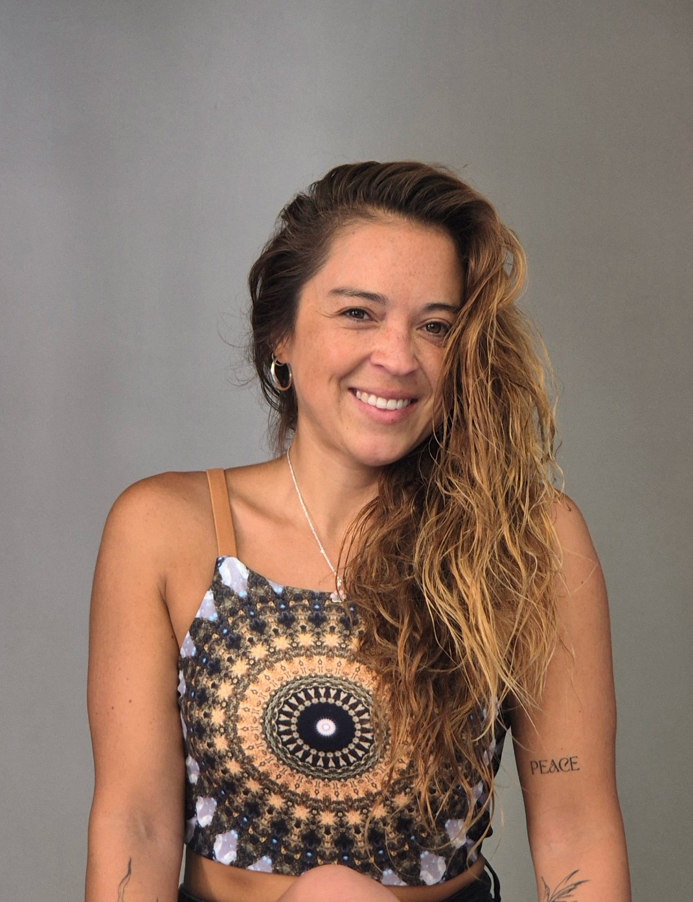

Fatiga persistente
Cansancio que no cede con descanso ni con vacaciones, y que ningún examen explica.
Medicina integrativa · Psiconeuroinmunología clínica
Fatiga que no se va, digestión alterada, inflamación, ansiedad, sueño roto. No son síntomas sueltos: son un sistema pidiendo atención. Conecto sistema nervioso, inmunidad, hábitos y contexto de vida para llegar a la causa raíz.
Si llegaste hasta acá, probablemente te suene
Te dijeron que tus exámenes están bien. Que es estrés. Que aprendas a vivir con eso. Y sin embargo el cansancio sigue ahí, la digestión sigue reaccionando y tú sigues buscando una explicación que nadie te dio.
Que un examen salga normal no significa que tu cuerpo esté funcionando bien.
Por qué vienen mis pacientes
Suelen aparecer juntos, y ahí está la pista: no son cinco problemas distintos, son un mismo sistema desregulado mostrándose por donde puede.
Cansancio que no cede con descanso ni con vacaciones, y que ningún examen explica.
Hinchazón, tránsito irregular, intolerancias que aparecieron de un momento a otro.
Dolores difusos, retención, piel reactiva: señales de un sistema inmune en alerta.
Un sistema nervioso que no logra bajar de revoluciones, aunque no pase nada afuera.
Cuesta dormir, o despiertas de madrugada y ya no vuelves a dormirte.
Tu salud en buenas manos
Soy la Dra. Daniela Bustos Riquelme, médica especializada en medicina integrativa con enfoque en psiconeuroinmunología clínica. Trabajo entre Barcelona y Chile.
La mayoría de mis pacientes llega después de años de exámenes normales y respuestas parciales. Cada síntoma se trató por separado, y ninguno se fue. Mi trabajo es leerlos juntos: qué le está pasando a tu sistema nervioso, a tu inmunidad, a tus hábitos y al momento de vida que estás atravesando.
De ahí sale un plan que se sostiene en el tiempo, no un alivio que dura mientras dura el tratamiento.
“No es que esté todo en tu cabeza.
Es que nadie había mirado tu cuerpo completo.”

Dos enfoques, una gran diferencia
Enfoque convencional
Enfoque integrativo
La medicina integrativa no reemplaza a tu médico tratante: se suma a él.
Cómo trabajamos
01 · Evaluación integral
Una consulta larga para escuchar tu historia completa: síntomas, exámenes previos, hábitos y momento de vida.
02 · Integración y análisis
Cruzo tus antecedentes con la evidencia clínica y los estudios necesarios, para entender cómo se conectan entre sí.
03 · Plan y acompañamiento
Un plan personalizado y realista, con seguimiento en cada etapa para ir ajustando lo que haga falta.
Reseñas verificadas
Pendiente · reemplazar por reseñas reales de Trustpilot
Llegué con fatiga y años de exámenes normales. Por primera vez alguien miró todo junto y me explicó qué estaba pasando.
Después de probar de todo, encontré un enfoque que considera mi salud completa. Hay un antes y un después en mi vida.
Profesional, cercana y muy humana. Se nota que le importa de verdad el bienestar de sus pacientes.
powered by Trustpilot — ver todas las reseñas
Preguntas frecuentes
{{ faq.a }}
Guía gratuita
Una guía breve para llegar a tu próxima consulta —conmigo o con quien te trate— con la información ordenada y las preguntas correctas.
Pendiente · reemplazar por embed de GoHighLevel
{{ guiaStatus }}
Guía para pacientes
Cómo preparar tu próxima consulta médica
Dra. Daniela Bustos Riquelme
Portada de ejemplo
Consulta de medicina integrativa
Una primera consulta para revisar tu historia completa: síntomas, exámenes, alimentación, sueño y contexto de vida.
Agenda gestionada en encuadrada.com